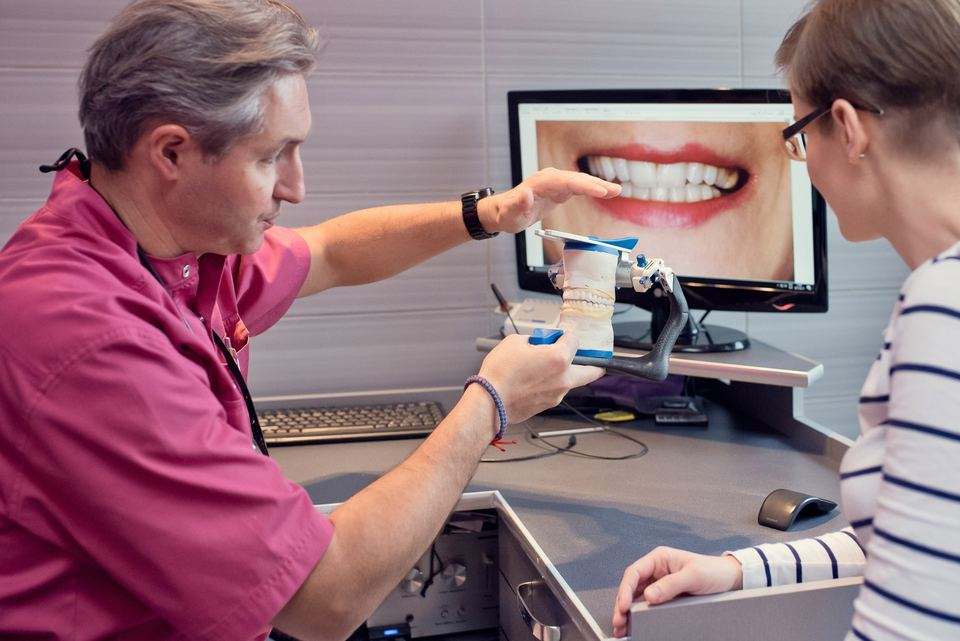
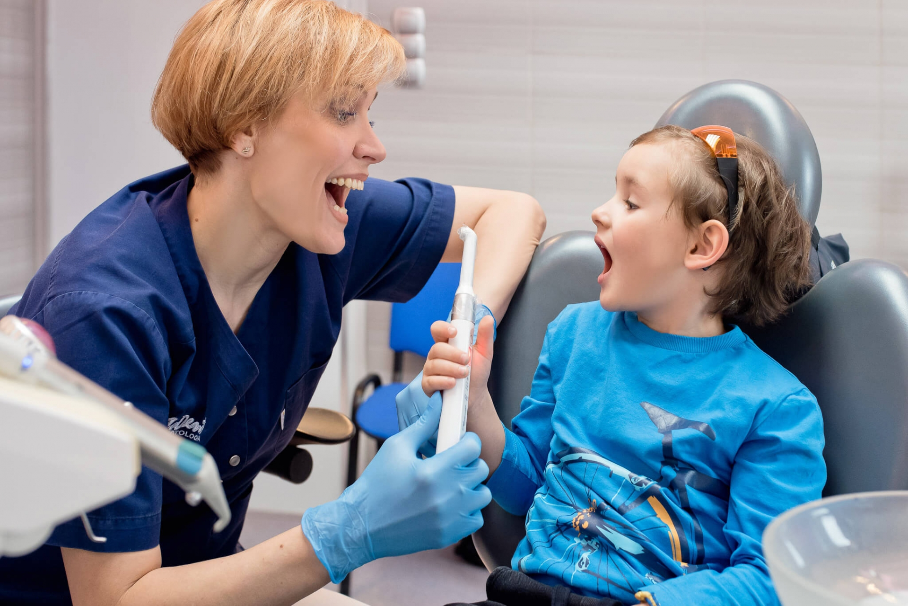
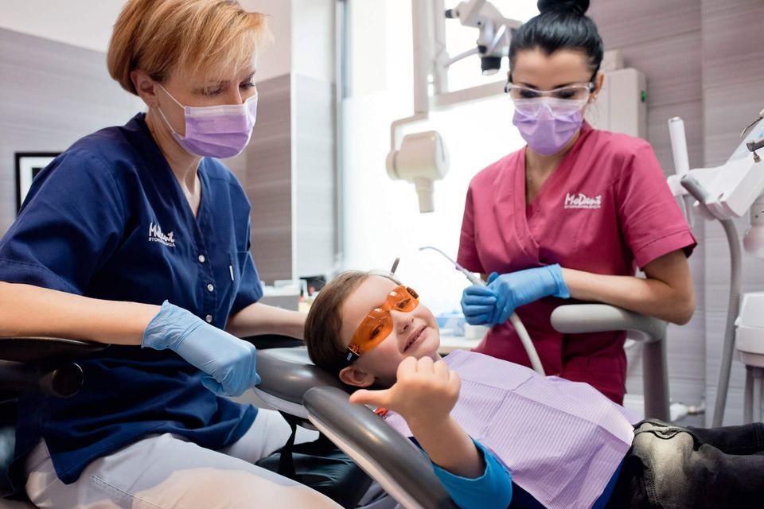
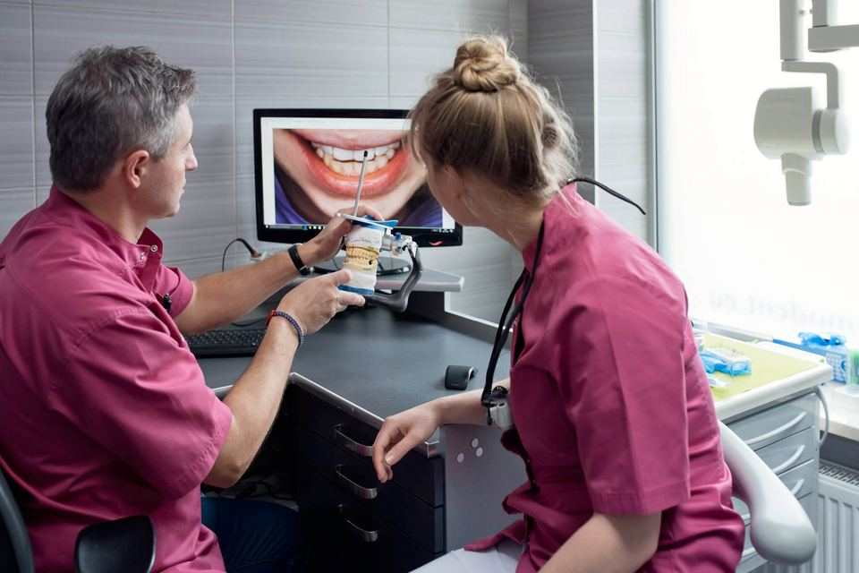
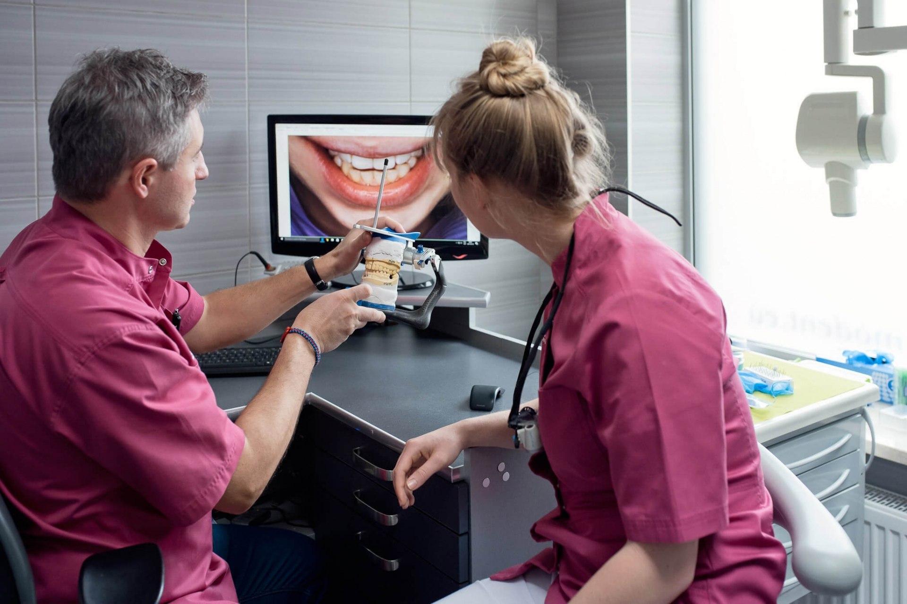

modent.eu - zdjecia strony glownej przed i po kompresji
Przygotowal: inz. Lukasz Stasiak, 25.09.2026. Te same zdjecia, ten sam uklad strony - zmienia sie tylko waga plikow.
12,1 MB27 zdjec strony glownej dzis (zmierzone 25.09.2026)
3,2 MBzestaw A: ten sam rozmiar w pikselach, zoptymalizowany JPEG (-74%)
1,4 MBzestaw B: wersja na telefon, 960 px szerokosci (-89%)
0,8 MBzestaw B w formacie WebP (-94%)
Co to znaczy w praktyce: przy LTE poza miastem (ok. 8 Mb/s, czyli 1 MB na sekunde) same zdjecia strony glownej pobieraja sie dzis ok. 12,1 s; po zamianie na zestaw B ok. 1,4 s, w WebP ok. 0,8 s. To wyliczenie z rozmiarow plikow, nie pomiar na konkretnym telefonie.
Suwak przed / po (4 najwieksze zdjecia)
Przesun suwak w lewo i w prawo. Po prawej jest wersja "na telefon" - najmocniej zmniejszona, wiec jesli tu nie widac roznicy, w zestawie A tym bardziej jej nie bedzie.

PRZED 1526 KB
PO 78 KB (telefon)
modent-063.jpg - 1920x1282 px, na telefon 960x641 px. Lewa strona suwaka: oryginal, prawa: po kompresji.

PRZED 1239 KB
PO 78 KB (telefon)
modent-083.jpg - 1920x1281 px, na telefon 960x640 px. Lewa strona suwaka: oryginal, prawa: po kompresji.

PRZED 1152 KB
PO 79 KB (telefon)
modent-078.jpg - 1920x1281 px, na telefon 960x640 px. Lewa strona suwaka: oryginal, prawa: po kompresji.


PRZED 1063 KB
PO 74 KB (telefon)
ok-148.jpg - 1920x1280 px, na telefon 960x640 px. Lewa strona suwaka: oryginal, prawa: po kompresji.
Jak wgrac samodzielnie: nazwy plikow sa identyczne z tymi na serwerze, wiec zestaw A mozna podmienic 1:1 w katalogu ze zdjeciami (albo wgrac przez panel strony i podpiac w tych samych miejscach). Zestaw B daje najwiekszy zysk na telefonach - najlepiej podpiac go jako wersje mobilna (srcset) albo zlecic mi: podmiana + srcset + WebP z fallbackiem to jednorazowa praca, wycena po Panstwa decyzji.